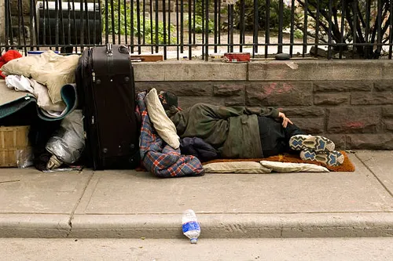
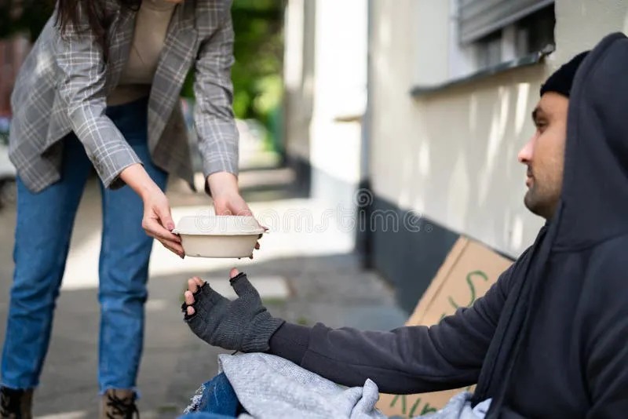

Abrigos para os necessitados

A ONG Ajuda oferece diversos abrigos para pessoas desabrigadas de todo o Brasil, tendo pelo menos um abrigo em cada estado e até um em cada cidade.

A ONG Ajuda oferece diversos abrigos para pessoas desabrigadas de todo o Brasil, tendo pelo menos um abrigo em cada estado e até um em cada cidade.

A ONG Ajuda tem um projeto de distribuição de marmitas extremamente eficiente, tendo distribuído mais de 10 milhões de marmitas para pessoas necessitadas.
Caso você tenha se interessado em nossos projetos, por favor, realize seu cadastro ou envie um E-mail para nós: ong@ajuda.org.br
Faça agora o seu cadastro!Toda doação faz a diferença. Com R$ 30 você fornece 1 marmita; com R$ 100, um kit de higiene para uma família. Você pode doar uma vez ou se tornar um doador recorrente mensal.
Nossos voluntários atuam em três frentes:
A carga horária varia de 4 a 12 horas semanais, conforme sua disponibilidade. Todos os voluntários passam por um treinamento inicial e recebem certificado de horas.
Compartilhe nosso trabalho em suas redes sociais. Cada indicação ajuda a ampliar o alcance dos nossos projetos.
Publicamos relatórios financeiros semestrais e nosso balanço anual é auditado por contador independente.